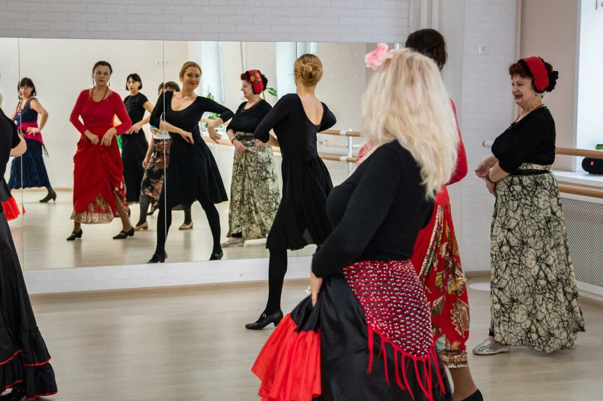
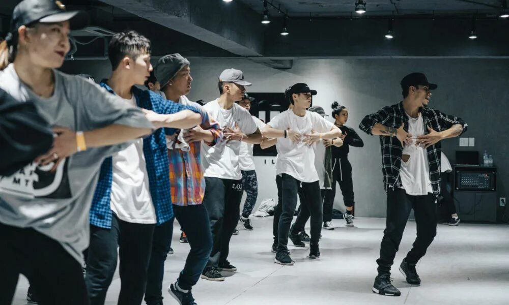
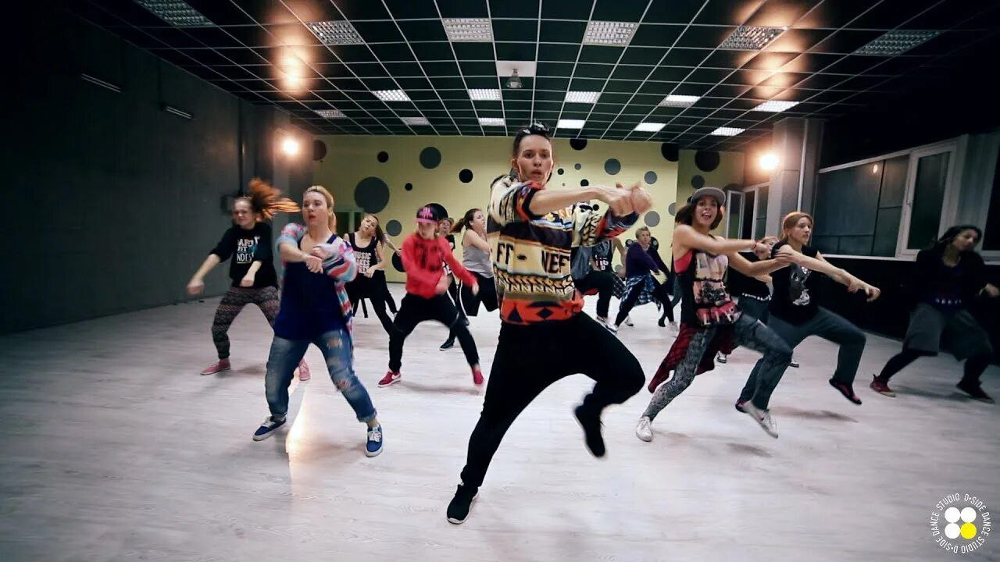
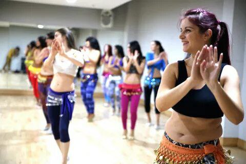

Танцы
|  |
ФламенкоМы обучаем двум основным стилям фламенко, внутри которых выделяются подстили. Первый – хондо, или фламенко гранде. В него входят такие подстили, или по-испански палос, как тонá, солеа, саэта и сигирийя. Это старейший вид фламенко, в котором слушатель может выделить грустные, страстные ноты. Второй стиль – канте, или фламенко чико. К нему относятся алегрия, фаррука и болерия. Это очень легкие, жизнерадостные и веселые мотивы в игре на испанской гитаре , в танце и пении. Помимо испанской гитары музыку фламенко создают кастаньеты и пальмас, то есть хлопки в ладоши. Левой рукой танцор или певец отбивает основной ритм произведения, а правой – создает замысловатые ритмические рисунки. Сейчас искусству игры на кастаньетас и у нас. Даже если у вас остались вопросы, то ничего. Ведь фламенко – это не наука, это – чувство, вдохновение, творчество. Как любят говорить сами андалусийцы: «El flamenco es un arte». |
Андалусия Вадимовна Кадис |
|  |
K-POPK-Pop — популярное современное направление, подразумевающее изучение хореографий известных корейских поп-исполнителей, таких как BTS, BLACKPINK, EXO, Stray Kids, и другие. К-поп хореография включает в себя множество элементов современных танцевальных направлений, особенно — HipHop, JazzFunk, House, Dancehall, Locking и др. К-поп — это сочетание взрывной стильной музыки, стильного танца и яркой подачи. Чаще всего k-pop группы делают ставку именно на визуальную часть, а именно костюмы и танцы. Так что движения чаще всего должны быть запоминающимеся, быстрыми, с хорошим исполнением. Этот стиль танцев подходит как для мужчин, так и для женщин. Этот стиль будет интересен как тем, кто уже знаком с корейской культурой, так и тем, кто только хочет с ней познакомиться. К выступлениям мы готовимся основательно: от проробатывания хореографии и её оттачивание, учение слов песни до шитья костюмов и остального внешнего вида участников. K-pop сможет подарить яркие эмоции, от которых закружится голова. |
Сабина Данияровна Омарова |
|  |
Hip-hop |
|
|  |
Восточные танцы |